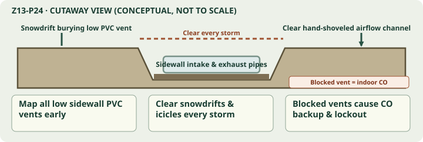

Z13-P24 · Home survival and utilities · New manuscript
Keep exterior furnace, dryer, and water-heater vents clear of snowdrifts
Prevent deadly indoor CO backup and furnace lockouts caused by drifting snow burying low exterior PVC intake/exhaust pipes.
When it applies · Modern high-efficiency condensing furnaces, tankless water heaters, direct-vent fireplaces, and clothes dryers in snow-belt climates like Minnesota.
Equipment · Plastic snow shovel or broom (avoid striking brittle cold PVC), warm outerwear, and indoor CO alarms.

Actions
- Locate ALL exterior sidewall exhaust and combustion-air intake pipes around your home foundation in autumn—high-efficiency white PVC vents often exit just 1 to 3 feet above grade and disappear rapidly beneath Upper Midwest snowdrifts.[U12, E25]
- After every heavy snowfall, blizzard, or high-wind drifting event, walk the exterior perimeter and clear snow and hanging icicles away from every furnace, water-heater, and dryer vent gently without cracking cold plastic pipes.[U12, E25]
- Remember that blocked intake/exhaust pipes can force lethal carbon monoxide indoors or trigger repeated furnace safety shutoffs right during the coldest night of the storm.[U12, C07]
Failure recognition · Assuming a modern basement gas furnace is "sealed and automatic" while a waist-deep snowdrift plugs its exterior sidewall exhaust pipe.[U12, E25]
Verify · Confirm every sidewall exhaust and intake pipe has clear airflow and zero icicle blockages after snowstorms, and indoor CO alarms are active.[U12, C09]
Stop or change course · Repeated furnace lockouts, odd exhaust odors indoors, or ANY CO alarm requires exiting immediately to fresh air and calling 911/qualified HVAC service.[U12, C07]
Evidence and editorial notes
- C07 · CPSC · Carbon Monoxide Fact Sheet (current web edition)
- Section: CO poisoning symptoms; what to do if suspected · Conditions: Suspected carbon monoxide exposure
Support: Escape to fresh air immediately and contact emergency services. Symptoms can include headache, dizziness, nausea and confusion.
Limitations: CO is colorless and odorless; symptoms mimic viral illness or altitude fatigue and can incapacitate sleepers without waking. · Conflicting evidence: None; aligns with CDC-CO.
Editorial note: Standard CO emergency stop condition across Z02 and Z03. · Specialist reviewer: Carbon monoxide safety and emergency medicine
Primary source · checked 2026-11-24 - C09 · CPSC · CO Alarms (current web edition)
- Section: Installing and maintaining CO alarms · Conditions: U.S. household CO prevention
Support: Install CO alarms on every level and outside sleeping areas. Follow placement and maintenance instructions.
Limitations: Alarms alert to buildup after release begins; they never make indoor fuel-burning appliances safe. · Conflicting evidence: None; complements C05 and C06.
Editorial note: Paired with exit-plan checks in household and shelter cards. · Specialist reviewer: Carbon monoxide safety
Primary source · checked 2026-11-24 - E25 · FEMA / Ready.gov · Winter Weather (current web edition)
- Section: Winter Weather > Stay Safe During Winter Storms · Conditions: Extreme cold, drifting snow, and power or travel disruption
Support: Prepare layered clothing, emergency shelter/heat alternatives, and vehicle winter kits; stay indoors during blizzards, protect against frostbite/hypothermia, and keep exhaust vents and exits clear of drifting snow.
Limitations: Drifting snow can block tent vents, doors, and vehicle tailpipes silently overnight. · Conflicting evidence: None; reinforces overnight exit/vent clearance checks.
Editorial note: Supports snow-drift exit maintenance and winter shelter failure recognition. · Specialist reviewer: Cold-weather shelter and emergency management
Primary source · checked 2026-11-24 - U12 · CPSC · CO Alarms (current web edition)
- Section: Home Alarms > Smoke, Carbon Monoxide, and Battery Backup Readiness · Conditions: Occupied residences with fuel-burning furnaces, water heaters, attached garages, or outage generators
Support: Maintain interconnected or battery-backed CO and smoke alarms on every floor and outside sleeping rooms, replace expired sensors on schedule, and keep exterior furnace/dryer/exhaust vents clear of drifting snow.
Limitations: Blocked high-efficiency PVC furnace intake/exhaust pipes in heavy snow can force CO back indoors or lock out heating systems. · Conflicting evidence: None; integrates with C09 and Z13-R03.
Editorial note: Connects winter snow-drift vent inspection to household CO prevention. · Specialist reviewer: Carbon monoxide safety and residential HVAC
Primary source · checked 2026-11-24
Source lineage · CPSC Carbon Monoxide and FEMA Winter Weather; new manuscript · Classification · New manuscript.